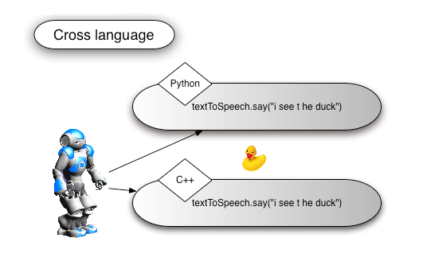
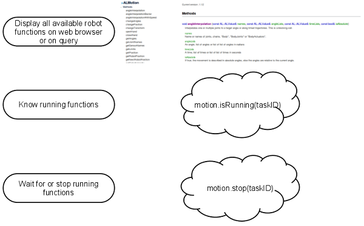
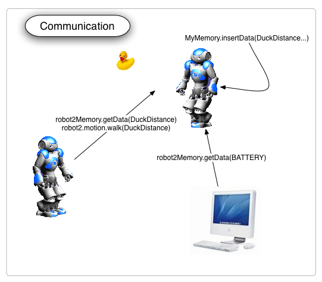
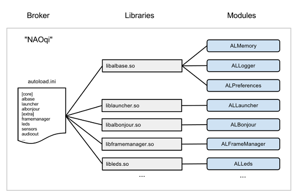
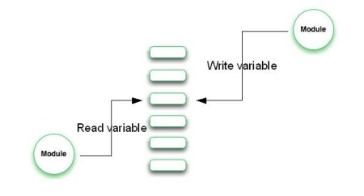

NAOqi Framework¶
What is NAOqi Framework¶
NAOqi is the name of the main software that runs on the robot and controls it.
The NAOqi Framework is the programming framework used to program NAO.
It answers to common robotics needs including: parallelism, resources, synchronization, events.
This framework allows homogeneous communication between different modules (motion, audio, video), homogeneous programming and homogeneous information sharing.
The framework:
- is cross-platform, which means that it is possible to develop with it on Windows, Linux or Mac. For more details, see Supported Operating Systems section.
- is cross-language, with an identical API for both C++ and Python. For more details, see Cross language section.
- also provides introspection, which means the framework knows which functions are available in the different modules and where. For more details, see: Introspection section.
Cross language¶
Software can be developed in C++ and Python. In all cases, programming methods are exactly the same, all existing API can be indifferently called from any supported languages:
- if you create a new C++ module, C++ API functions can be called from everywhere,
- if properly defined (see note in Making a Python module - Reacting to events), python module API functions can be called from everywhere.
Most of the time you will develop your behaviors in Python and your services in C++.
These features are also linked to this section: Introspection.
Introspection¶
Introspection is the foundation of robot API, capabilities, monitoring and action on monitored functions. The robot knows all the available API functions. Unloading a library will automatically remove the corresponding API functions. A function defined in a module can be added in the API with a BIND_METHOD (defined in almodule.h).
If you bind a function - just three source code lines - you automatically benefit from the following features:
- Call function in both C++ and Python (see Cross language)
- Know function if the function is being executed
- Execute function locally or remotely (from a computer or another robot) (see Distributed tree and communication)
- Call wait, stop, isRunning on functions
The API is displayed on a web browser. Just type in the robot url and port 9559 - for example http://127.0.01:9559. The Robot will display its modules list, method list, method parameters, descriptions and examples. The browser also displays parallel methods that can be monitored, made to wait, stopped.
Distributed tree and communication¶
A real time application can be only one standalone executable or tree of robot, tree of processes, tree of modules. Whatever your choice is, the call methods are always the same. Connect an executable to another robot with IP address and port, and all the API methods from other executables are available in exactly the same way as with a local method. NAOqi makes the choice between fast direct call (LPC) and remote call (RPC).
The NAOqi process¶
The NAOqi executable which runs on the robot is a broker. When it starts, it loads a preferences file called autoload.ini that defines which libraries it should load. Each library contains one or more modules that use the broker to advertise their methods.
The broker provides lookup services so that any module in the tree or across the network can find any method that has been advertised.
Loading modules forms a tree of methods attached to modules, and modules attached to a broker.

Broker¶
A broker is an object that provides two main roles:
- It provides directory services: Allowing you to find modules and methods.
- It provides network access: Allowing the methods of attached modules to be called from outside the process.
Most of the time, you don’t need to think about brokers. They do their work transparently, allowing you to write code that will be the same for calls to “local modules” (in the same process) or “remote modules” (in another process or on another machine).
Proxy¶
A proxy is an object that will behave as the module it represents.
For instance, if you create a proxy to the ALMotion module, you will get an object containing all the ALMotion methods.
To create a proxy to a module, (and thus calling the methods of a module) you have two choices:
- Simply use the name of the module. In this case, the code you are running and the module to which you want to connect to must be in the same broker. This is called a local call.
- Use the name of the module, and the IP and port of a broker. In this case, the module must be in the corresponding broker.
The full difference between local and remote modules is explained in the Local modules section.
To learn how to extend the NAO API, you must learn how to create new modules. You can read a tutorial about creating a C++ NAOqi module in the Extending NAO API - Creating a new module section.
Modules¶
Typically each Module is a class within a library. When the library is loaded from the autoload.ini, it will automatically instantiate the module class.
In the constructor of a class that derives from ALModule, you can “bind” methods. This advertises their names and method signatures to the broker so that they become available to others.
A module can be either remote or local.
- If it is remote, it is compiled as an executable file, and can be run outside the robot. Remote modules are easier to use and can be debugged easily from the outside, but are less efficient in terms of speed and memory usage.
- If it is local, it is compiled as a library, and can only be used on the robot. However, they are more efficient than a remote module.
Each module contains various methods. Among them, some methods are bound, which means they can be called from outside the module, for example inside another module, from an executable etc. The way to call these bound functions does not vary if the module is remote or local: the module automatically adapts.
The module API can be seen from the robot web page.
Local modules¶
Local modules are two (or more) modules launched in the same process. They speak to each other using only ONE broker.
Since local modules are in the same process, they can share variables and call each others’ methods without serialization nor networking. This allow the fastest possible communication between them.
If you need to do some close loop (enslavement for example), you MUST use local modules.
Remote modules¶
Remote modules are modules which communicate using the network. A remote module needs a broker to speak to other modules. The broker is responsible for all the networking part. You must know that remote modules work using SOAP over the network. You cannot do fast access using remote module (direct memory access for example).
Connection between remote modules¶
Remote modules can speak with other modules by connecting their brokers to other modules’ brokers using a proxy.
- A connection Broker to Broker opens a mutual communication. Modules from both brokers can talk to each others.
- A Proxy to Broker connection opens a single way of communication. The proxy can access to all modules registered to the broker BUT the modules registered to the broker cannot access to the module that owns the proxy.
Broker to Broker connection¶
You can connect two modules together by connecting their brokers.
For example, you have two modules B and C. When you connect their brokers, B can access to C’s functions and C can access to B’s functions.
To connect modules this way you need to specify the IP address and port number of the main broker. (--pip, --pport command line option when you start your module). Then you can access the module by getting a proxy on it:
AL::ALProxy proxy = AL::ALProxy(<modulename>);
Since module’s broker is already connected using --pip and --pport, you do not need to specify IP address and port number when you create a proxy.
Proxy to Broker connection¶
You can connect your module to another one without specifying --pip and --pport. To do that, you need to create a proxy inside your module and connect it to the broker IP address and port number you want.
For example, you have two modules B and C. When you connect B to C just using a proxy, B can access to C functions BUT C cannot access to B functions.
AL::ALProxy proxy = AL::ALProxy(<modulename>, <ip_adress>, <port_number>);
Blocking and non-blocking calls¶
NAOqi offers two ways to call methods:
- Blocking calls Like normal method calls, simple calls are blocking - The next instruction will be executed after the end of the previous call. All calls can raise an exception and should be encapsulated in a try-catch block. Calls can have return values.
- Non-blocking calls By using the post object of a proxy, a task is created in a parallel thread. This enables you to do other work at the same time (e.g. walking while talking). Each post call generates a task id. You can use this task id to check if a task is running, or wait until the task is finished.
Memory¶
ALMemory is the robot memory. All modules can read or write data, subscribe on events so as to be called when events are raised.
Please be aware that ALMemory is not a real-time synchronization tool. Limit subscribe on DCM/time or motion/synchro or real time variable.
ALMemory¶
ALMemory is an array of ALValue’s (see ALValue). Variable access is thread safe. We use read/write critical sections to avoid bad performance when memory is read.
ALMemory contains three types of data and provides three different APIs.
- Mainly data from sensors and joints
- Event
- Micro-event (see ALMemory overview for more explanations)
Data from sensors and joints¶
- Data have no history.
- Data are only 32 bits variable.
- User can get pointer on data for a very fast access.
- No subscribe on data.
Reacting to events¶
A few modules exposes also some events.
You must subscribe to event from an other module, using a callback that must be a method of your subscriber.
For instance, you can have a module called FaceReaction containing a method onFaceDetected.
You can subscribe the FaceReaction module to the FaceDetected method of the ALFaceRecognition module with the onFaceDetected callback.
This will cause the face detection algorithm to run, and every time a face is detected, the onFaceDetected callback will be called.
To see how this is done in Python, please see the Making a Python module - Reacting to events section.